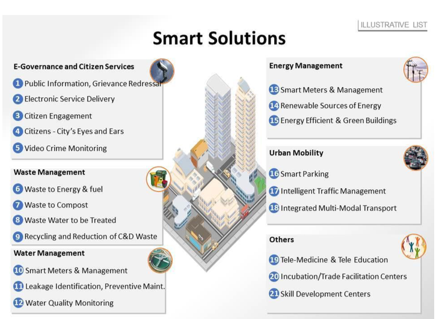

Press the image to go at Personal section
What is Smart City?
The first question is what is meant by a ‘smart city’. The answer is,
there is no universally accepted definition of a smart city. It means different things
to different people. The conceptualisation of Smart City, therefore, varies from city to
city and country to country, depending on the level of development, willingness to change
and reform, resources and aspirations of the city residents.
The purpose of the Smart Cities Mission in India for example is to drive economic growth and improve
the quality of life of people by enabling local area development and harnessing technology,
especially technology that leads to Smart outcomes. Area- based development will transform
existing areas (retrofit and redevelop), including slums, into better planned ones, thereby
improving liveability of the whole City. New areas (greenfield) will be developed around cities
in order to accommodate the expanding population in urban areas. Application of Smart Solutions
will enable cities to use technology, information and data to improve infrastructure and services.
Comprehensive development in this way will improve quality of life, create employment and enhance
incomes for all, especially the poor and the disadvantaged, leading to inclusive Cities.
The image exemplifies the concept of smart cities:

http://smartcities.gov.in/upload/uploadfiles/files/What%20is%20Smart%20City.pdf